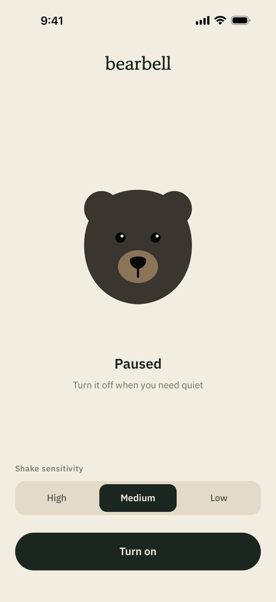
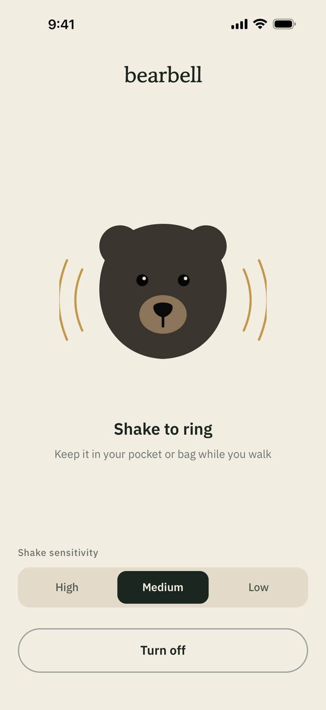

bearbell
Tap the bear to hear it
A bear bell that rings as you walk
Keep your phone in your pocket or bag and it rings with every step, letting wildlife know a person is nearby.
How it works
Turn it on
Open bearbell and tap Turn on. Pick the sensitivity that suits your stride.
Put it in your pocket
A bag works too. The screen can stay off.
Walk
The bell rings with every step, so wildlife knows you’re coming.


What it does
-
Rings with the screen off
It senses motion and rings even when your phone is locked in your pocket.
-
Three sensitivity levels
Choose High, Medium or Low to match your stride and where you carry your phone.
-
Turn it on or off from the Lock Screen
On iPhone, use the Lock Screen or Dynamic Island. On Android, use the notification. No need to open the app when you need quiet.
-
An original bell sound
A clear, brass-like tone synthesized just for bearbell.
-
Collects no data
No accounts, ads or analytics. Nothing is sent anywhere.